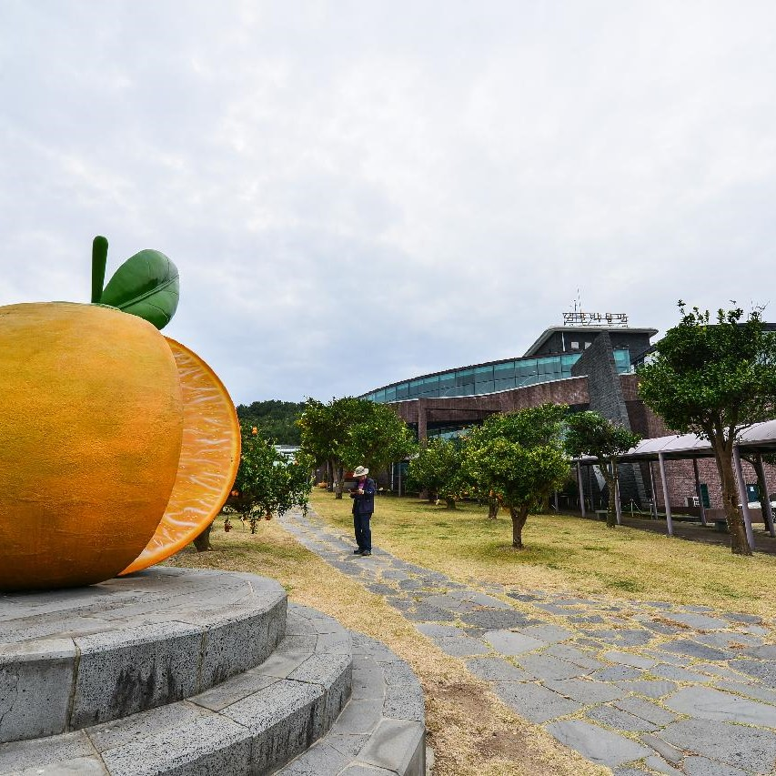
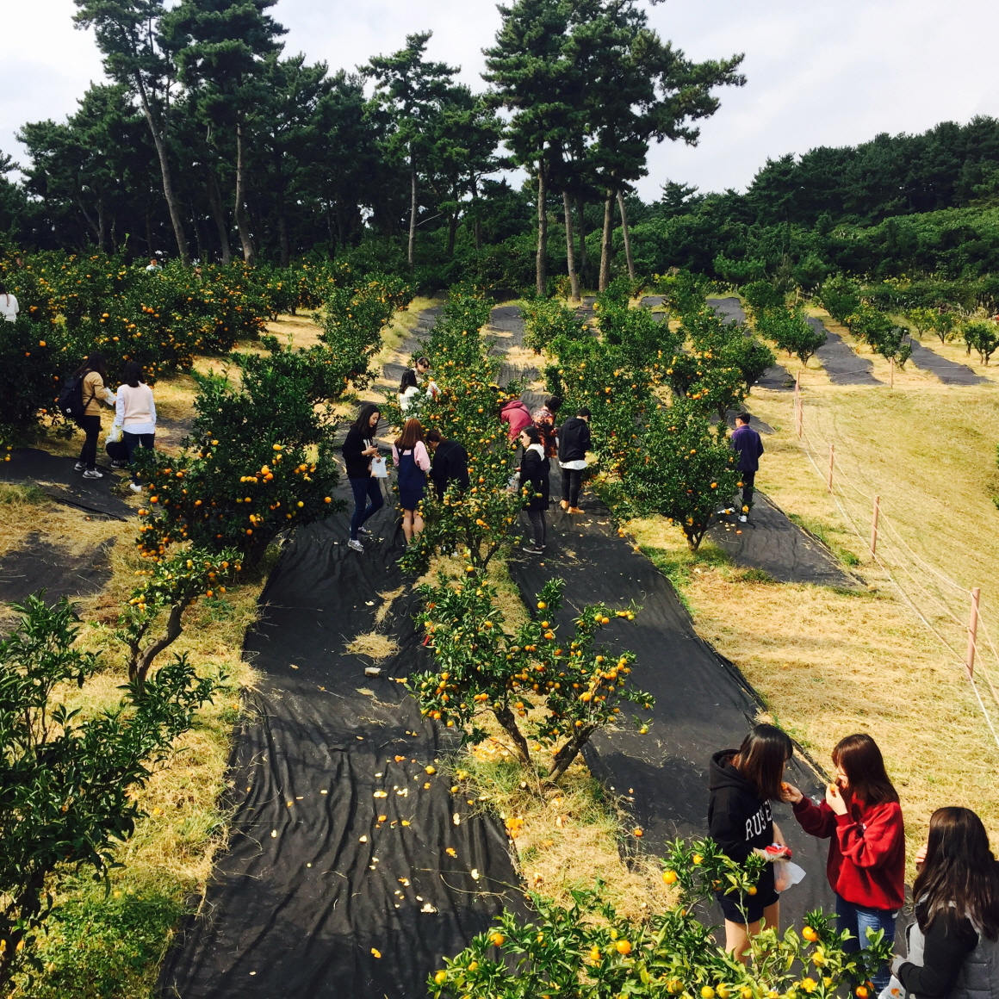
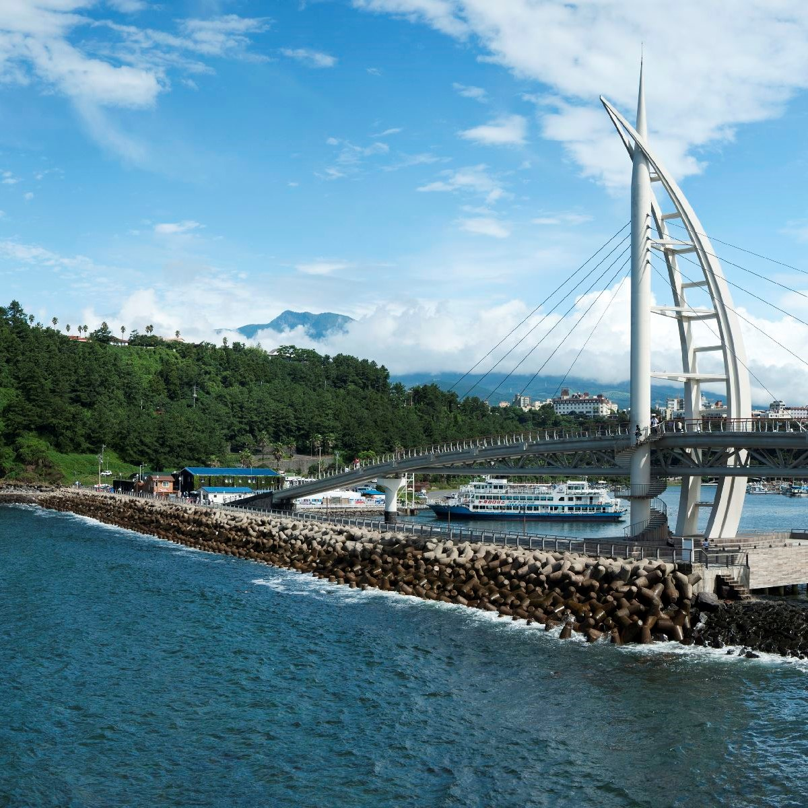
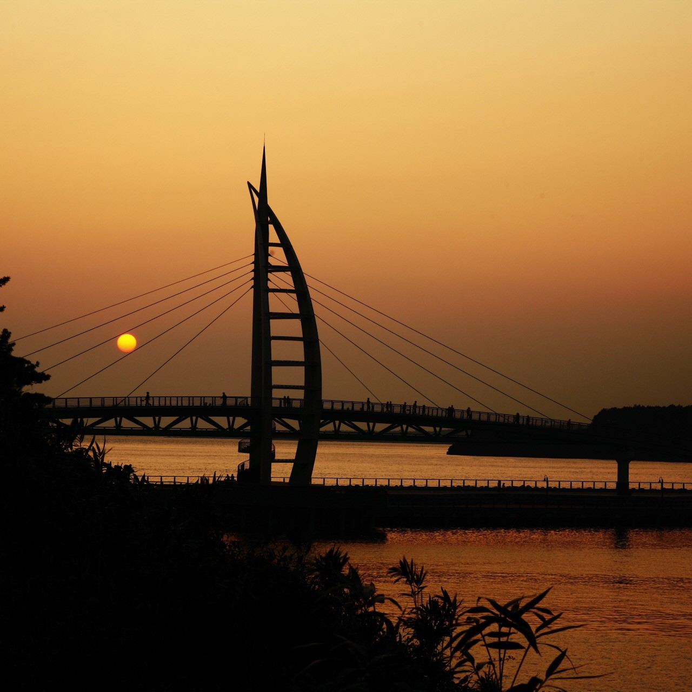
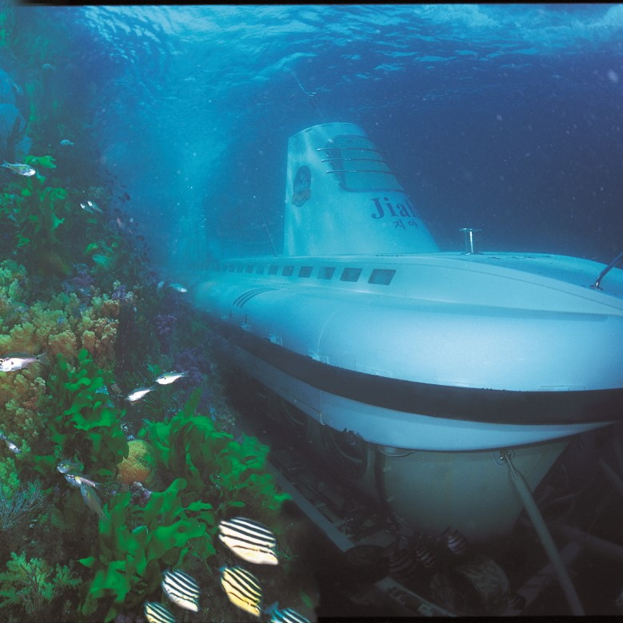
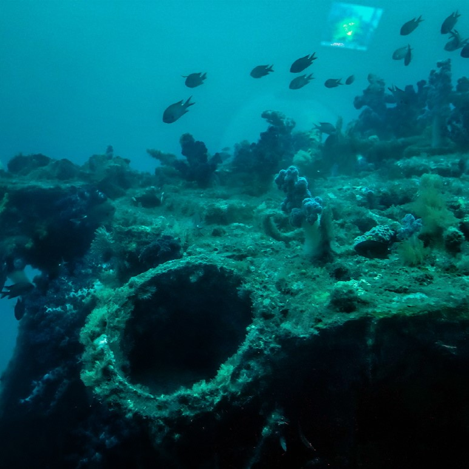
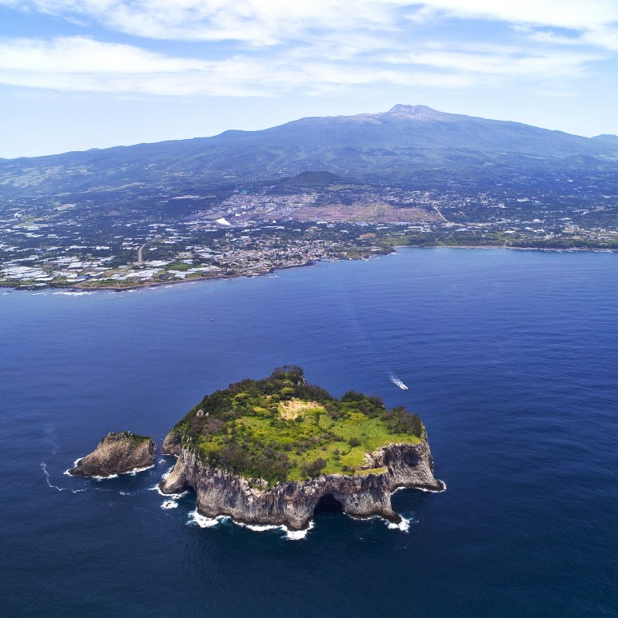
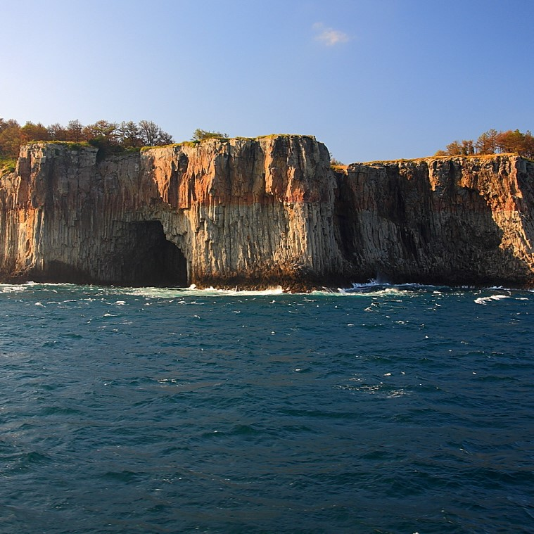

제주의 풍경
제주지도
축제와 행사
서귀포시








사진 출처
[서귀포감귤박물관] https://www.visitjeju.net/kr/detail/view?contentsid=CONT_000000000500019#
[새연교] https://www.visitjeju.net/kr/detail/view?contentsid=CONT_000000000500312#
[서귀포 잠수함] https://www.visitjeju.net/kr/detail/view?contentsid=CONT_000000000500329#
[범섬] https://www.visitjeju.net/kr/detail/view?contentsid=CONT_000000000500237#